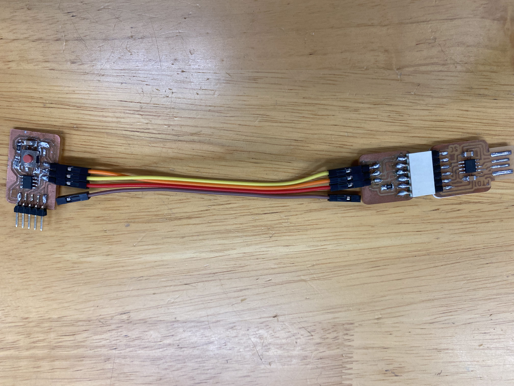

PCB Manufacturing
Making of Hello Board
We would be designing and fabricating a hello board to be used to show case our FTDI and UPDI boards.
This board consist of a LED light and a button, which both are programnmable.
SnapEDA is a site where we can get the schematics of our component, namely the chip, and import it into Eagles for wiring.


This Fusion 360 Eagle, the software we used to design and wire the circuit and map out the schmetics.

This is the schmatics of the hello board made.
It has a 1612 SMD packaged LED (Light Emitting Diode) and a SMD DPDT push button, controlled by an 8 pin SMD SOIC150 package ATtiny 412 Microcontroller.
After that, I have used the auto route function to route the wiring and rearrange manually to achive 100% wiring.

Then, the Png file is generated and I put it in mods, to generate the Gcode use for routing.

Hello Board Schematics
Hello Board Board diragram
Hello Board NC
Hello Board Outline NC
{kind=link}
{kind=link}
Soldering
"If the solder is applied properly, it should like Mt Fuji type, rather than Ice Cream"


For the soldering, my 'Hello Board' had connectivity issues with the Arduino application.
I have counted wrongly the pins and cut the pins wrongly, so I had tried to use super glue to align the missing pin to the other pins and then solder on the extra pin to the unused connector. Eventually I had decided that it is not connected to anything so I have dropped it.

After troubleshooting done by Mr Stevens, the board was found to have its chip and LED shorted, thus rendering those component broken.
I have opted to do most of the soldering at home, which yield few issues.
Firstly, my soldering iron tip was hotswapable, and I have opted to use a fat pointed tip iron head, which could not properlly apply the solder between pins. This resulted in many messy residue which may have resulted in the shorting of the chip.

The solder may have travel across the lanes.
Next, the temperature on my soldering iron was too high, thus prolong contact with the chip causes the component to attempt to melt.
For future boards, I might attempt to use a soldering liquid (approx: 138 celcius) which melts at a lower temperature and a heat gun
// ATtiny412
// PB - 0
// LED - 1
#define pb 0
#define led 1
const int dlyTime = 500;
void setup()
{
pinMode(led, OUTPUT);
}
void loop()
{
if(digitalRead(pb) == LOW)
{
delay(dlyTime);
digitalWrite(led, LOW);
delay(dlyTime);
digitalWrite(led, HIGH);
}
else
{
digitalWrite(led, HIGH);
}
}
// Code for sensing a switch status and writing the value to the serial port
int switchPin = 4; // Switch connected to pin 4
#define pb 0
#define led 1
const int dlyTime = 500;
void setup()
{
Serial.swap(1);
pinMode(switchPin, INPUT); // Set pin 0 as an input
pinMode(led, OUTPUT);
Serial.begin(9600); // Start serial communication at 9600 bps
}
void loop()
{
if (digitalRead(switchPin) == HIGH)
{ // If switch is ON,
digitalWrite(led, LOW);
Serial.write(1); // send 1 to Processin
delay(dlyTime);
digitalWrite(led, HIGH);
delay(dlyTime);
}
else
{ // If the switch is not ON,
Serial.write(0); // send 0 to Processing
digitalWrite(led, HIGH);
}
delay(100); // Wait 100 milliseconds
}
Final Product
Final programmer with Hello Board

Placeholder Video for the working board with embeded programming
Video